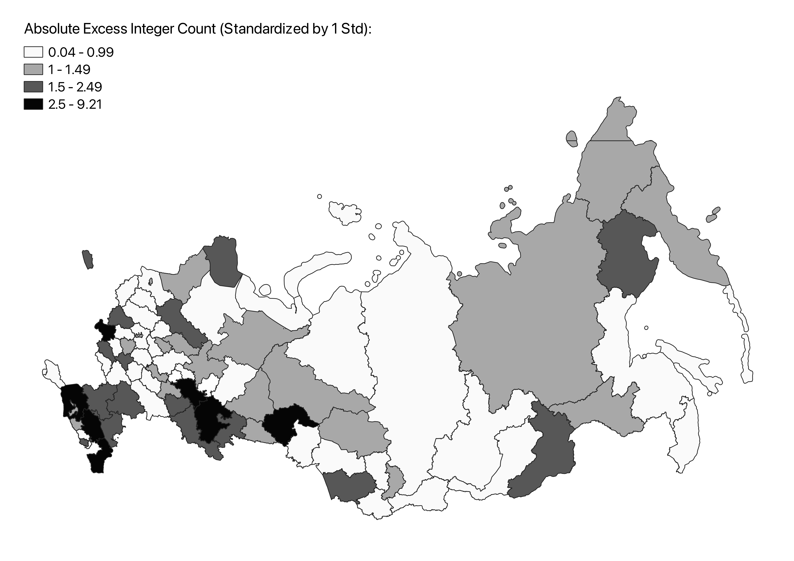
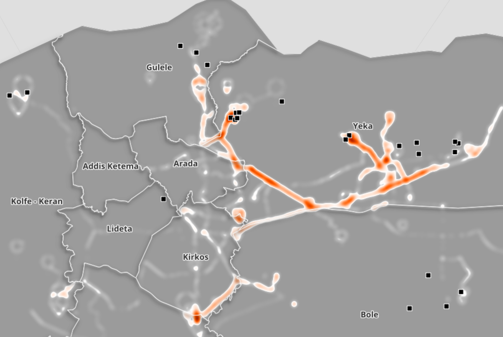

Working Papers
Fraud and Legitimacy: The Economics of Autocratic Elections
Job Market PaperAbstract: Why do autocracies employ seemingly excessive electoral fraud when victory is virtually guaranteed?.. Abstract: Why do autocrats commit seemingly excessive electoral fraud when victory is virtually guaranteed? This paper examines whether an autocratic government can use fraud to improve its perceived legitimacy, especially when it is damaged by unrest or unpopular policies. Through a survey experiment with a representative sample of Russian voters, I demonstrate that reported election outcomes can influence voters' perceptions: information about high (low) turnout increases (decreases) trust in the government. Next, analyzing data from Russian legislative elections, I identify electoral manipulations via the excess integer values method and hypothesize that legitimacy concerns can explain their spatial distribution. Utilizing a novel dataset on the 2018 anti-pension reform protests, I provide evidence suggesting that protests informed fraud allocation: places with higher protest participation saw an increase in electoral fraud in subsequent legislative elections.

Gendered Differences in Mobility and the Demand for Transport in Ethiopia
with Tigabu Getahun, Ammar A. Malik, and Mahesh KarraAbstract: We assess the extent to which travel demand varies by gender... Abstract: We assess the extent to which travel demand varies by gender, particularly for women, with the introduction of high-quality transport in urban Ethiopia. A total of 1,022 married couples in Addis Ababa were offered an allowance for on-demand, private taxi services over a two-month period. The allowance recipient was randomized to be either the woman, the man, or the couple jointly. Additionally, the total allowance amount was randomized to either "low" (30 USD) or "high" (80 USD) amounts. We document significant baseline gender differences in mobility, with 80 percent of men traveling daily or almost every day compared to less than 40 percent of women. As a result of the intervention, we find no significant differences in taxi service utilization measured by allowance take-up, total trips made, the proportion of credit spent, and the average trip cost between the Woman and Man arms, suggesting that the improved transport option may have contributed to closing the gender gap in physical mobility.
IGC Policy Brief | BU GDP Center Blog

Work in Progress
Social Networks and Solving Collective Action Problem
Abstract: This paper investigates whether social connectedness can help opposition overcome the collective action problem... Abstract: This paper investigates whether social connectedness can help opposition overcome the collective action problem by facilitating spread of a unified voting strategy. I construct a social network graph using public profiles from VKontakte, one of Russia's most popular social media platforms, and calculate measures of social connectedness (density and average path length) at a city level. My findings reveal that higher connectedness amplifies the effect of opposition presence, a proxy for voting strategy utilization, and is associated with a lower incumbent vote share.